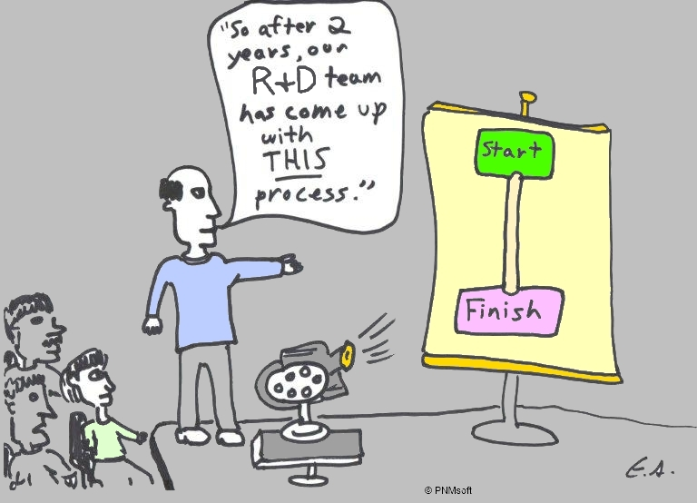

Automation
A path for greatnes
Created by Kamil "BlackDante" Kiełbasa
Workflow
Tools
- Minify
- CSS Preprocesors
- Lint
- Test runners
- Watchers
- Compile (ES6 / CoffeeScript)
So many task...
but internet is so interesting
Grunt

What the hell is Grunt?
Grunt JS is a file based task automation tool that make life better.
Install
npm install -g grunt-cliInstall Plugins
npm install grunt-contrib-jshint --save-devnpm install grunt-contrib-cssmin --save-devnpm install grunt-contrib-watch --save-devnpm install grunt-contrib-less --save-devpackage.json
{
"name": "my-project-name",
"version": "0.1.0",
"devDependencies": {
"grunt": "~0.4.5",
"grunt-contrib-jshint": "~0.10.0",
"grunt-contrib-nodeunit": "~0.4.1",
"grunt-contrib-uglify": "~0.5.0"
}
}
Basic Setup
module.export = function (grunt) {
grunt.initConfig({
// config
})
};
Project Configuration
grunt.initConfig({
pkg: grunt.file.readJSON('package.json'),
uglify: {
options: {
banner: '/*! <%= pkg.name %> <%= grunt.template.today("yyyy-mm-dd") %> */\n'
},
build: {
src: 'src/<%= pkg.name %>.js',
dest: 'build/<%= pkg.name %>.min.js'
}
}
});
Using Plugins
grunt.loadNpmTasks('grunt-contrib-uglify')grunt.loadNpmTasks('grunt-contrib-cssmin')grunt.loadNpmTasks('grunt-contrib-watch')Task Register
grunt.registerTask('default', ['uglify'])grunt.registerTask('default', ['uglify', 'task1', 'task2'])Who uses Grunt?
DEMO
Q&A
Gulp

What the hell is Gulp?
Gulp JS is a stream based task automation tool that make life better.
Install
npm install -g gulpInstall Plugins
npm install gulp-jshint --save-devnpm install gulp-cssmin --save-devnpm install gulp-watch --save-devnpm install gulp-less --save-devpackage.json
{
"name": "my-project-name",
"version": "0.1.0",
"devDependencies": {
"gulp": "latest",
"gulp-help": "^1.1.0",
"gulp-html-replace": "^1.2.0",
"gulp-if": "^1.2.4",
"gulp-jslint-simple": "latest",
"gulp-less": "latest",
}
}
Project Configuration
var gulp = require('gulp');
var sass = require('gulp-ruby-sass');
gulp.task('sass', function() {
return sass('src/styles/main.scss', { style: 'expanded' })
.pipe(autoprefixer('last 2 version', 'safari 5', 'ie 8', 'ie 9', 'opera 12.1', 'ios 6', 'android 4'))
.pipe(gulp.dest('dist/assets/css'))
});
Using Plugins
var plugin = require('gulp-plugin')var gulp = require('gulp')var sass = require('gulp-ruby-sass')Task Register
gulp.task('sass', function() {
return sass('src/styles/main.scss', { style: 'expanded' })
.pipe(autoprefixer('last 2 version', 'safari 5', 'ie 8', 'ie 9', 'opera 12.1', 'ios 6', 'android 4'))
.pipe(gulp.dest('dist/assets/css'))
});
Task List Register
gulp.task('build', ['styles:remove', 'styles', 'lint'], function () {
notifier.notify({
title: 'IPLA Smart TV Alliance',
message: 'Gulp task: "build" done.'
});
});
Api
- gulp.task(name, [deps], fn) - define a task
- gulp.src(glob) - create stream
- gulp.dest(glob) - save files
- gulp.watch(glob, tasks) - run task when one of globbed files is changed
DEMO
Q&A
Grunt vs Gulp
Grunt
- Configuration over code
- Configure plugin separately
- You have to define exact order of tasks
- Tasks can be run concurrently, if you configure grunt-concurrent plugin
Gulp
- Code over configuration
- Manually write your tasks, using a stream or promise
- Gulp will take care of your tasks dependencies itself
- Tasks are run concurrently
Bower

What the hell is Bower?
Package manager for the web.
Install
npm install -g bowerFind Packge
bower search `package`Install Packages
bower install `package`bower install jquery --savebower install underscore --save-devUsing Packages
Bower.json
{
"name": "app-name",
"version": "0.0.1",
"dependencies": {
"sass-bootstrap": "~3.0.0",
"modernizr": "~2.6.2",
"jquery": "~1.10.2"
},
"private": true,
}
Bower and Grunt
npm install grunt-bower-task --save-devgrunt.loadNpmTasks('grunt-bower-task');Bower and Grunt
grunt.initConfig({
bower: {
install: {
//just run 'grunt bower:install' and you'll see files from your Bower packages in lib directory
}
}
});
Bower and Gulp
npm install gulp-bower-files --save-devvar gulpBowerFiles = require('gulp-bower-files');Bower and Gulp
gulp.task("bower-files", function(){
gulpBowerFiles().pipe(gulp.dest("./lib"));
});
DEMO
Q&A
Yeoman

What the hell is Yeoman?
The web's scaffolding tool for modern webapps
Install
npm install -g yoInstall generator
npm install --global generator-xyzAccessing to all generators
yoAngular App Setup
npm install -g grunt-cli bower yo generator-karma generator-angularCreate Angular App
yo angular [app-name]